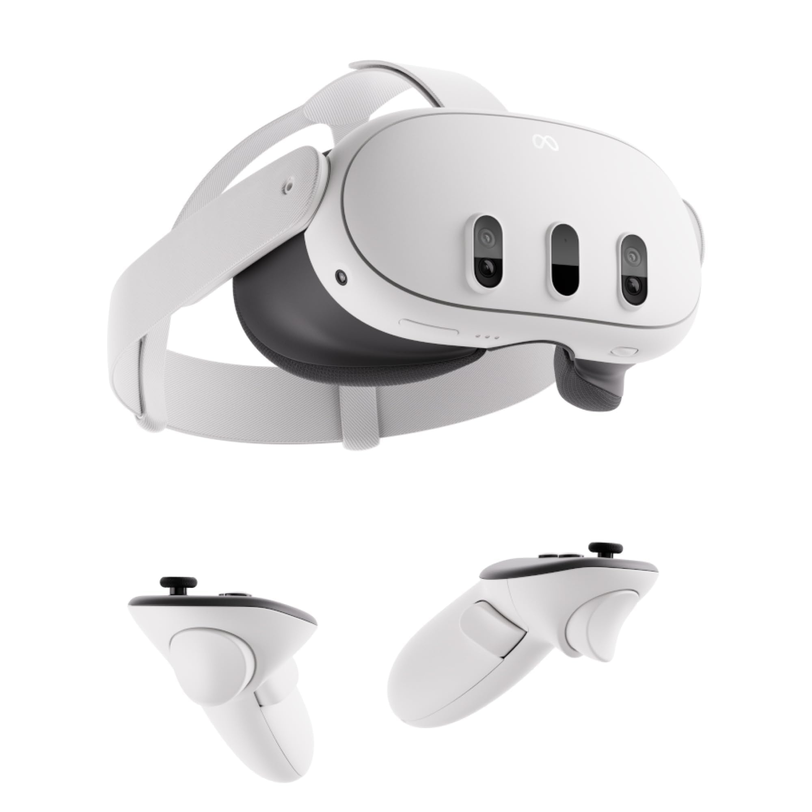
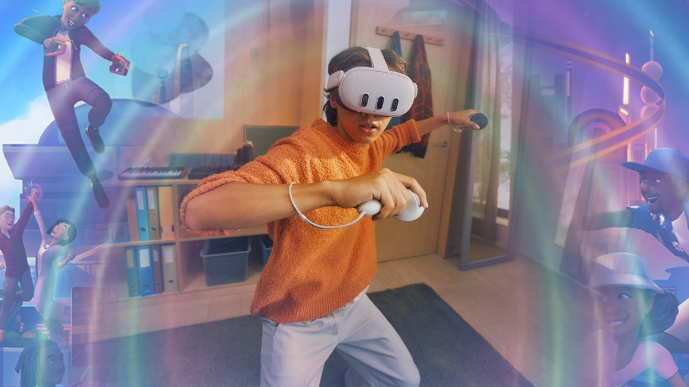
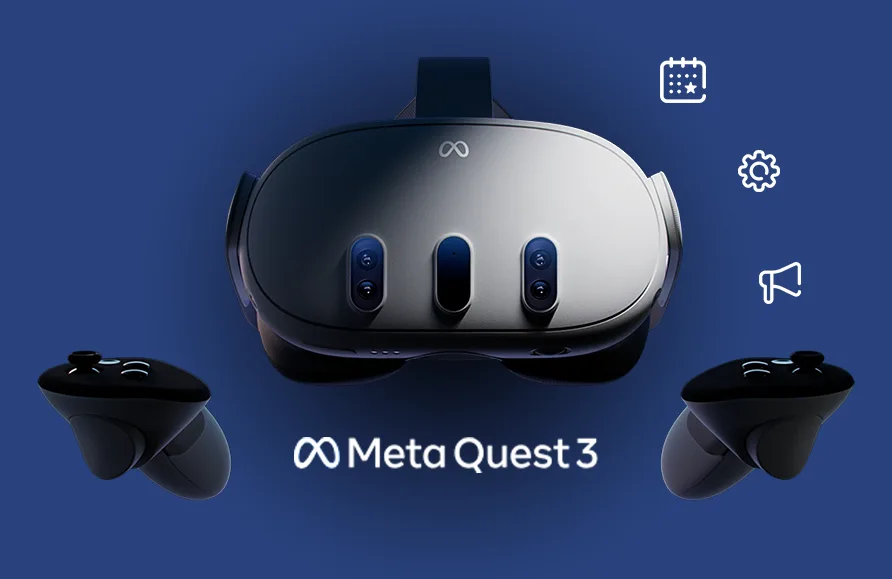
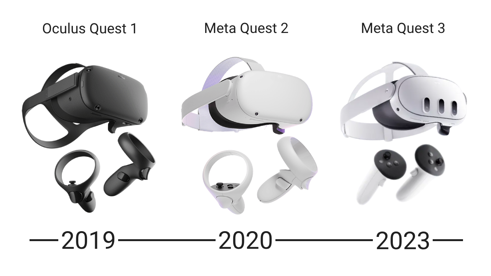

Introducción
Meta Quest 3 es el nuevo casco de realidad virtual de Meta. Ofrece una experiencia inmersiva y cómoda, ideal para juegos, trabajo y más. Es la última incorporación a la línea de dispositivos de realidad virtual de Meta, lanzada en 2023. Este casco combina tecnologías de realidad virtual (VR) y realidad aumentada (AR), permitiendo a los usuarios experimentar un entorno completamente inmersivo. El dispositivo está diseñado para ser intuitivo y accesible, lo que lo hace adecuado tanto para principiantes como para usuarios avanzados.
Funciones
Con la integración de realidad aumentada, el Quest 3 permite interactuar con el mundo físico y virtual al mismo tiempo.
Realidad Mixta: Gracias a cámaras a color y sensores avanzados, las Quest 3 permiten ver el entorno real con elementos virtuales superpuestos, lo que facilita experiencias interactivas que combinan el mundo físico con el digital.
Realidad Virtual: Ofrecen experiencias de realidad virtual completa, permitiendo al usuario sumergirse en entornos y aplicaciones 3D que cubren por completo su campo de visión.
Controladores de Alta Precisión: Los nuevos controladores Touch Plus tienen un diseño mejorado y mejor respuesta háptica, para movimientos y respuestas más realistas.
Experiencia multijugador y social: Brindan soporte para juegos y experiencias multijugador, permitiendo a los usuarios interactuar y jugar con otros en el entorno virtual
Usos y Ventajas
Inmersión total: Gráficos de alta calidad.
Multifuncional: Para jugar, aprender y trabajar.
Portátil: Funciona sin cables ni accesorios extras.
-Ofrece una experiencia visual y sonora envolvente, mejorando la sensación de presencia en entornos virtuales.
-Adecuado para juegos, educación y entrenamiento profesional, permitiendo aplicaciones interactivas y creativas.
-Ligero y cómodo, lo que permite sesiones largas sin causar fatiga.
-Funciona de manera autónoma, sin necesidad de una computadora o cables, facilitando su uso para principiantes.
-Permite a los usuarios socializar y jugar con amigos en entornos virtuales, enriqueciendo la experiencia.
-Meta proporciona actualizaciones regulares, añadiendo nuevas funciones y aplicaciones.
-Integra elementos digitales en el entorno físico, ofreciendo un aprendizaje y diseño práctico.
Evolución
El Quest 3 es la continuación de la serie Quest, mejorando en calidad de imagen, velocidad y facilidad de uso sin cables. Desde el lanzamiento de Oculus Quest en 2019 y su sucesor Quest 2, la Meta Quest 3 ha mejorado significativamente en términos de resolución, rendimiento y experiencia de usuario. La evolución de estos dispositivos muestra un enfoque en hacer la realidad virtual más accesible y atractiva para todos.
